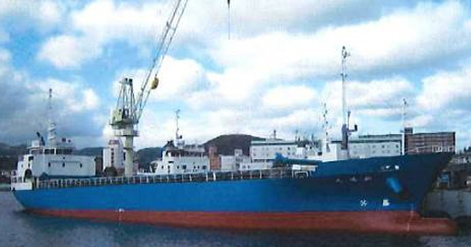

1,599 DWT 497 GRT General Cargo Blt 1997 Jp
/ informed by BNC SHIPBROKING CO., LTD.
(18-507)

- TYPE : GENERAL CARGO SHIP
- BUILT : JAN. 1997, NAKATANI SHIPBUILDING CO LTD., JAPAN
- FLAG/CLASS : JAPAN / JG, JAPAN GREATER COASTING AREA
- LOA/B/D : 76.22 / 12.00 / 7.12 M
- DWT/draft : 1,599.96 T / 4.15 M
- GRT : 497 T
- MAIN ENGINE : HANSHIN LH30L, 1,800 PS × 300 RPM X 1 SET
- PROPELLER : CPP (CONTROLABLE PITCH PROPELLER)
- BOW THRUSTER : FITTED
- SPEED : 12.5 KNOTS
- CARGO HOLD CAPACITY : TOTAL 2,796.15 m³
- OTHER TANK CAPACITY : BW 859, FO 98, FW 40, OTHER 7 m³
- CREW COMPLEMENT : 7 P
- LAST SS : JAN. 2016
- NEXT DD : MAY. 2019
- INSPECTION : TOKYO – SETO INLAND SEA, JAPAN AROUND MID SEPT., 2018
- DELIVERY : AROUND MIDDLE OF APRIL, 2019 AT PORT ONOMICH, JAPAN
Information History
- 180703 : She is available for sale.